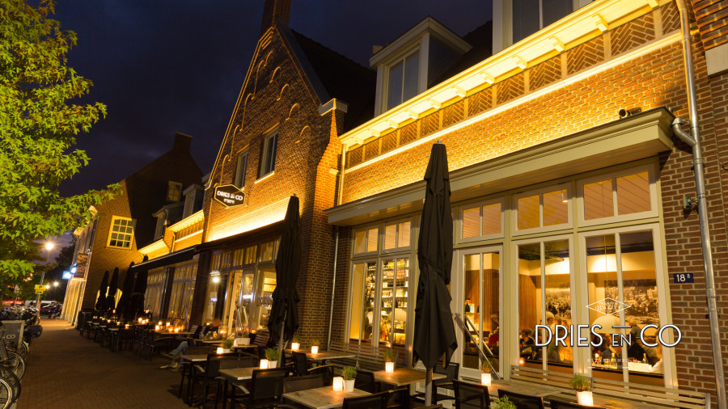
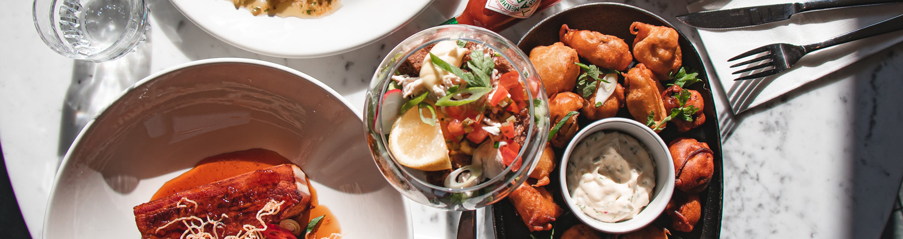
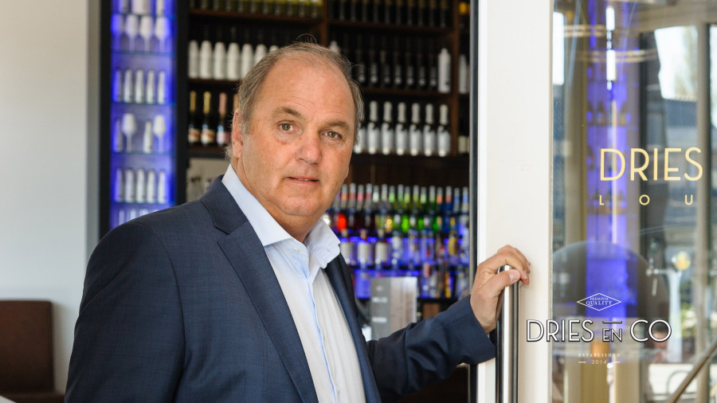
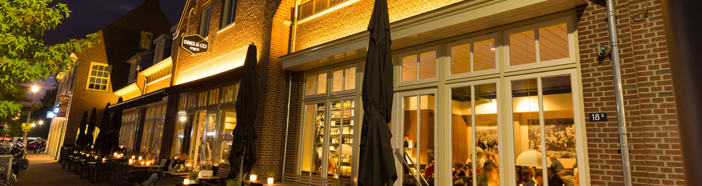
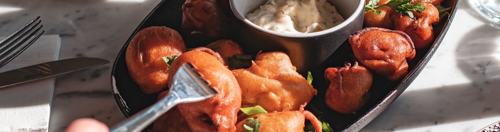
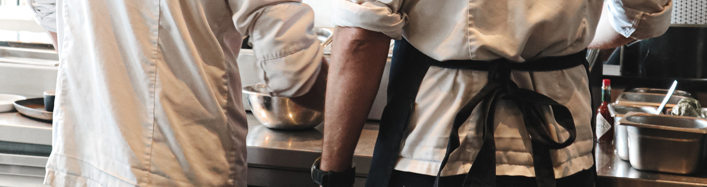
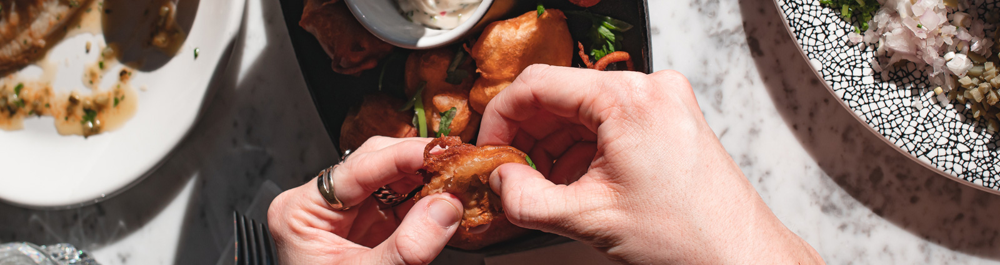
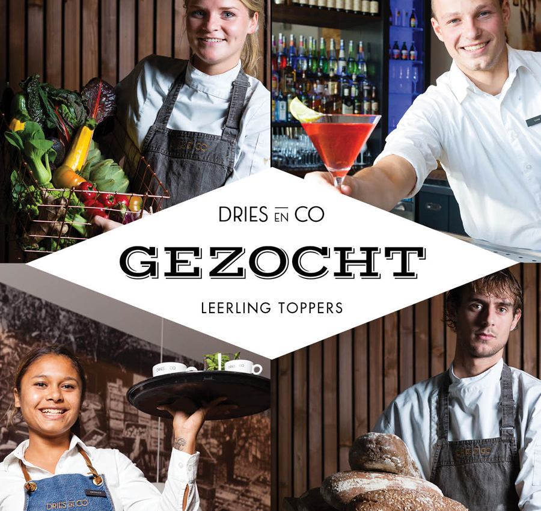

DRIESenCO
Restaurant, loungebar & terras in Elst
7 dagen per week open voor ontbijt, lunch, borrel en diner
Meer dan zomaar een restaurant
Tussen Arnhem en Nijmegen, in het stadse en gezellige dorp Elst, ligt DRIES en CO: gastvrij en met een verwelkomende allure. Het interieur is eigentijds en warm, met als middelpunt de comfortabele bar en de open keuken, waar de heerlijke geuren al je zintuigen prikkelen.
In de bar zijn drie vitrines verwerkt met onder andere charcuterie, kazen, delicatessen en zoetigheden uit eigen keuken. Presentatiewanden met een mooie collectie wijnen, geurende koffie- en theeblends, kleurige macarons en verse patisserie maken het compleet. Een groot deel is van eigen label en staat ook klaar om mee te nemen: om thuis na te genieten of om familie, relaties en vrienden mee te verwennen.
Het terras is toegankelijk en biedt, net als binnen, ruimte om in alle rust te genieten van een goede maaltijd, een gezellige borrel of een lekkere kop koffie.
- Open keuken
- Producten om mee te nemen
- Geschenkkaarten
- Groot terras
- Sinds 2014

Onze loungebar
Drankjes, cocktails, bites, gezelligheid en muziek: daar staat onze loungebar voor. Maak kennis met de loungebar van DRIES en CO, in een toegankelijke en ontspannen sfeer.
Onze barmedewerkers adviseren u graag en leiden u met plezier door de uitgebreide drankkaart: mooie wijnen van goede wijnhuizen, spannende cocktails en exclusieve bieren. Of geniet van onze indrukwekkende collectie whisky's en gins.
Trek gekregen? Onze keuken bereidt à la minute heerlijke borrelplanken en bites.

“Wij gaan als team voor goed gastheerschap, kwaliteit, verfijning en originaliteit.”
DRIES en CO is het resultaat van een intensieve samenwerking tussen Theo Driessen, Albert Heijn en Gall & Gall in Elst. Na grondig vooronderzoek kwam er een toegankelijk en aantrekkelijk restaurant met een tijdloze, trendy ambiance, zoals je dat vaak in grote steden aantreft. De grote verse hammen, de gezellige bar en de patisserie in de vitrines nodigen uit om direct plaats te nemen.
“Wij willen iets bijzonders bieden, terwijl we tegelijk toegankelijk willen zijn voor het grote publiek. Opgegroeid in de horeca en groot geworden in de retail, wilde ik een onderscheidend concept neerzetten. DRIES en CO is daardoor een verfijnde cocktail geworden die culinaire verwennerij biedt en toch betaalbaar en laagdrempelig blijft.”
THEO DRIESSEN
Reserveren
Diner
Via onze reserveringstool reserveert u gemakkelijk een diner bij DRIES en CO.
Reserveer onlineGroepen en binnenlopen
Met meer dan 8 personen? Reserveer door te mailen naar info@driesenco.nl of via het contactformulier.
Voor een kopje koffie, een lekkere lunch of een gezellige borrel hoeft u niet te reserveren: u bent altijd van harte welkom.
Wat zeggen onze gasten?
“Met alle respect, maar voor zo'n kleine plaats zoiets goeds in huis hebben, chapeau. Eten hoog op smaak, vriendelijke bediening. Kortom een top avond gehad.”
“Vandaag weer heerlijk gegeten! Wat een toptent in Elst, donderdagavond een wildavond meegemaakt met jagers die uitleg gaven over het wild en erg leuk er waren ook hoornblazers bij. Super gegeten met fantastische wijnen! Alle medewerkers in de bediening en keuken, chapeau!”
“Great food! Great people! Had Surf n Turf; spices exploded in my mouth and steak grilled to perfection!”
“Dit is echt een heel gezellig, sfeervol en goed restaurant. Heb er al een paar keer geluncht, of alleen lekker bakkie koffie gedaan met macarons zo verrukkelijk, je eet je vingers erbij op. Ze hebben hun eigen producten, waaronder koffiebonen waar we een pak van gekocht hebben voor thuis. Gegarandeerd goed.”
“Gezellig vakantie vieren met een lunch bij Dries & co... onze kinderen staan te juichen. We gaan voor een snackplank, borrelplank en de greenmarket. Er verschijnen planken met allerlei lekkere dipsausjes, vers breekbrood, groenten, hapjes. Alles gaat op, jammie! De locatie is in stijl en heel sfeervol.”
“Vrijdagavond heerlijk gegeten en gedronken. Complimenten voor de dames en heer in de bediening. Je voelt je welkom bij jullie!”
“Zelfs met een dieet weten ze wel raad! Bedankt voor de goede service! Mijn kleine meid kon daardoor toch gewoon mee uit eten! Jullie zijn toppers!”





Werken bij DRIES en CO
DRIES en CO is altijd op zoek naar representatieve, vakbekwame en enthousiaste medewerkers die onze hoge norm van service en gastvrijheid waar kunnen maken. In 2014 zijn we begonnen en we groeien hard. Horecatoppers, studenten of afgestudeerde fanatiekelingen: ervaring is geen must.
- Assistent-bedrijfsleider
- Zelfstandig kok
- Leidinggevende bediening
- Medewerker bediening
- Leerling bediening
Wat bieden wij jou
- Cocktail- en servicetraining, wijnproeverij en baristaworkshop
- Een leuk en professioneel team
- Met een glimlach naar je werk en weer naar huis
- Flexibele werktijden (dag/avond), ideaal naast je studie
Wat verwachten wij
- Je houdt van de horeca
- Je bent flexibel, betrouwbaar en gedreven
- Spontaniteit en gastgericht is je aangeboren
- Werken in een dynamische omgeving vind je leuk
Vacatures uitgelicht
Assistent-bedrijfsleider
De horeca is echt jouw passie. Je hebt leidinggevende capaciteiten, een gastvriendelijke uitstraling, een enthousiaste instelling en plezier, passie en een stralende glimlach.
Wij bieden een goed marktconform salaris, goede arbeidsvoorwaarden, een prettige werksfeer en ruimte voor persoonlijke ontwikkeling. Stuur je cv, motivatie en recente pasfoto naar info@driesenco.nl.
Zelfstandig werkend kok
Je bereidt gerechten en draagt verantwoordelijkheid voor een deel van de organisatie van de keuken: dagelijkse werkzaamheden plannen, bestellingen ontvangen en controleren, kwaliteit en presentatie bewaken en de HACCP-regels naleven. Ook voor souschef.
Je hebt ervaring als kok, de benodigde diploma's (of bent bereid ze te halen), werkt zelfstandig, bent kwaliteitsgericht, flexibel en stressbestendig en 18 jaar of ouder.
Wij bieden doorgroeimogelijkheden, elk jaar een bruisend personeelsuitje, flexibele werktijden, leuke collega's en een marktconform salaris. Fulltime (38 uur) of parttime, voor onbepaalde tijd. Mail je cv en motivatie met foto naar info@driesenco.nl.
Solliciteren of een vraag? Mail naar info@driesenco.nl.
Tot ziens in Elst
| Maandag | 08:30 – 17:00 |
| Dinsdag | 08:30 – 23:00 |
| Woensdag | 08:30 – 23:00 |
| Donderdag | 08:30 – 23:00 |
| Vrijdag | 08:30 – 00:00 |
| Zaterdag | 10:00 – 00:00 |
| Zondag | 10:00 – 23:00 |
Ontbijt ma–vr 08:30 – 11:00, za–zo 10:00 – 11:30. Lunch dagelijks 11:30 – 15:30.
Parkeren: op het parkeerdek bij de naastgelegen Albert Heijn is ruime parkeergelegenheid voor onze gasten. Het parkeerdek blijft open tot onze laatste gast huiswaarts is gegaan.
Volg ons op Instagram en Facebook.